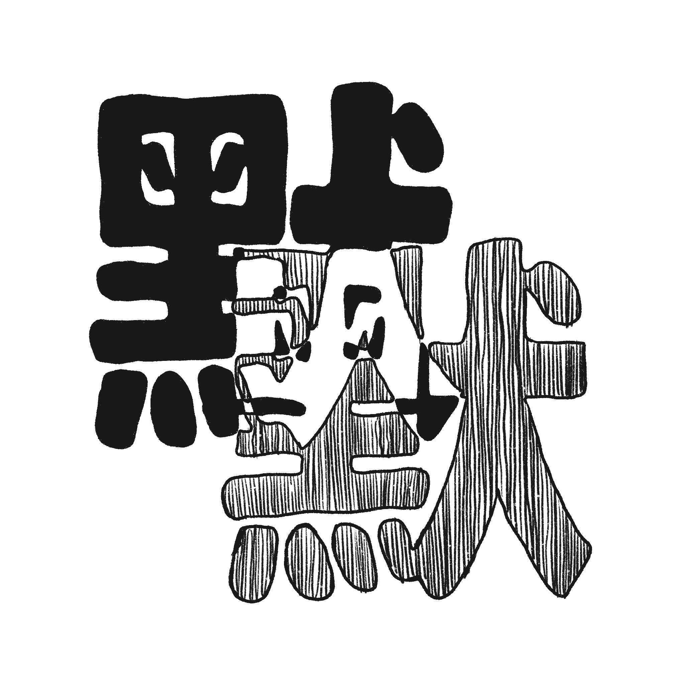
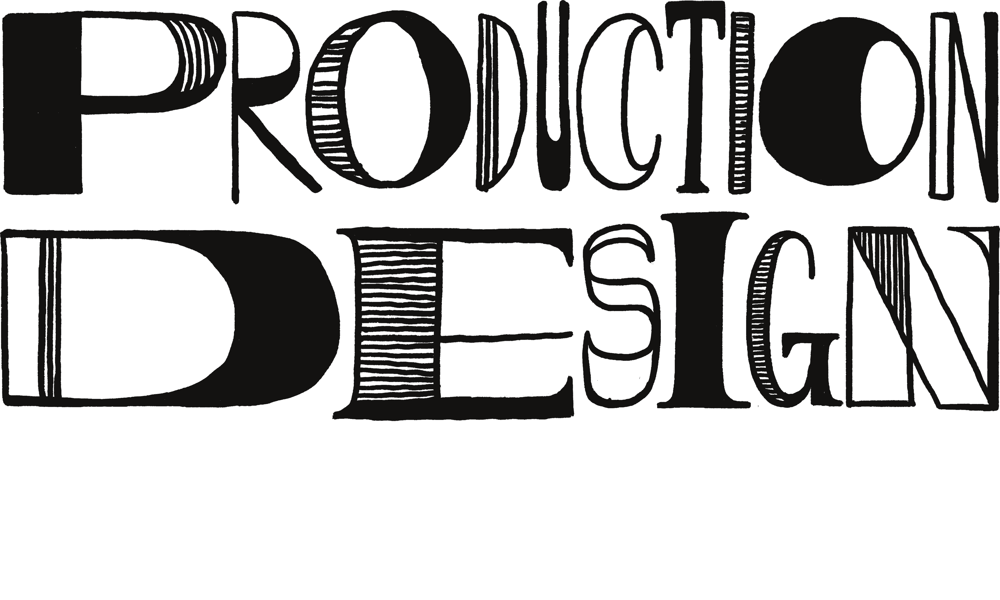
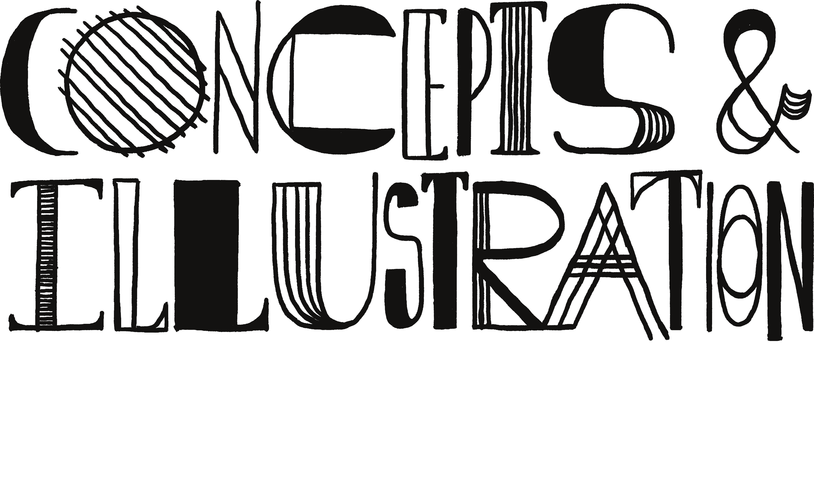
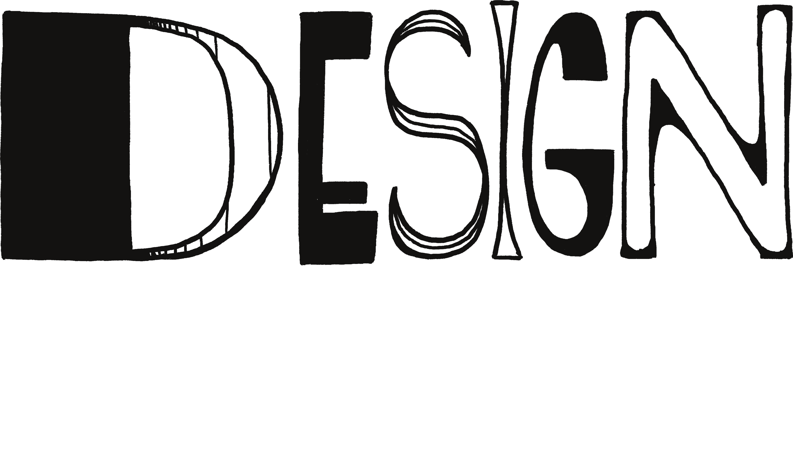
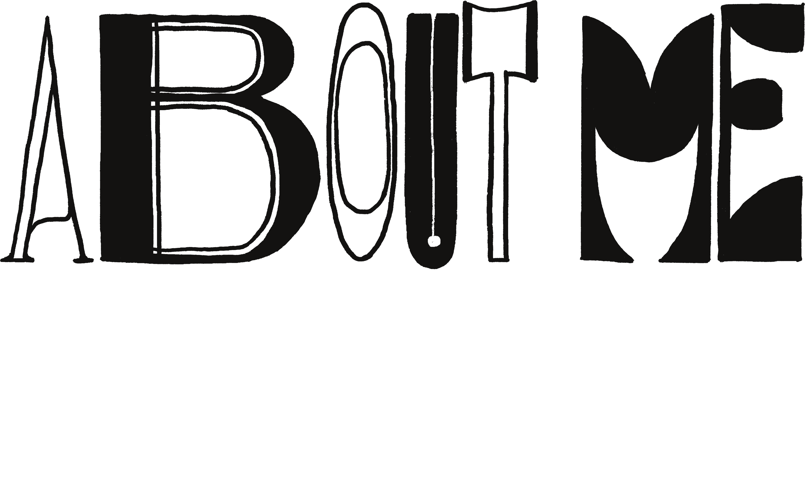

Visual worlds for film, vertical drama, music video, and commercial work — concept through set, prop, and what reads on camera.
See more
Concept art and illustration — classical Chinese, wuxia, and xianxia world-building, and the objects that tell you where you are.
See more
Poster design, social marketing campaigns, and prop graphic design across film and commercial projects.
See more
Momo Chuang (默默) is an art director and production designer based in Los Angeles, building visual worlds for film, vertical drama, music video, and commercial work.
She moves between the drawing table and the set — concept and elevation through prop, set dressing, and what finally reads on camera. Her work leans toward classical Chinese, wuxia, and xianxia world-building, and toward objects: the single prop that tells you where you are.
She studied Media Arts + Practice at USC's School of Cinematic Arts, and works across Mandarin, English, and Taiwanese.
| 2025 | Soup 湯 | Art Director |
| 2025 | Antidote | Costume Designer |
| 2025 | On the River Bank | Production Designer |
| 2025 | Before Sunrise | Production Designer · Costume Designer |